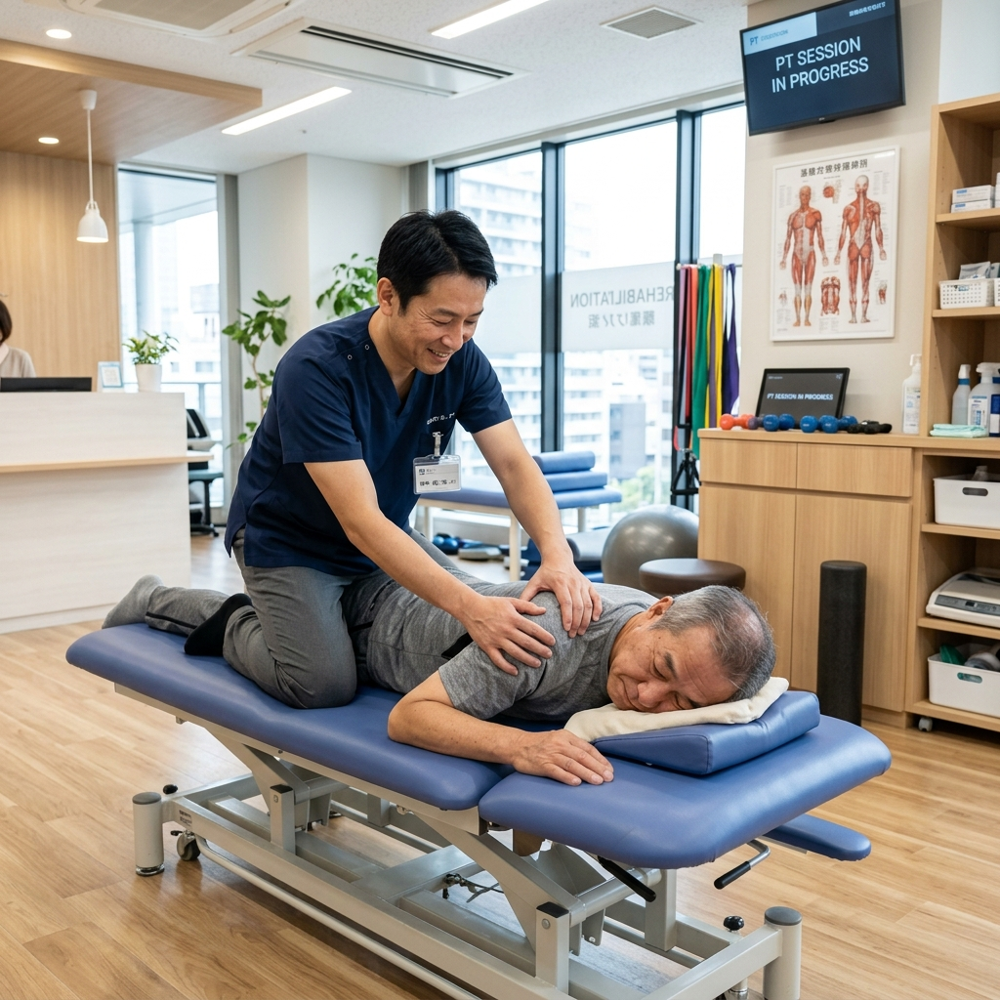
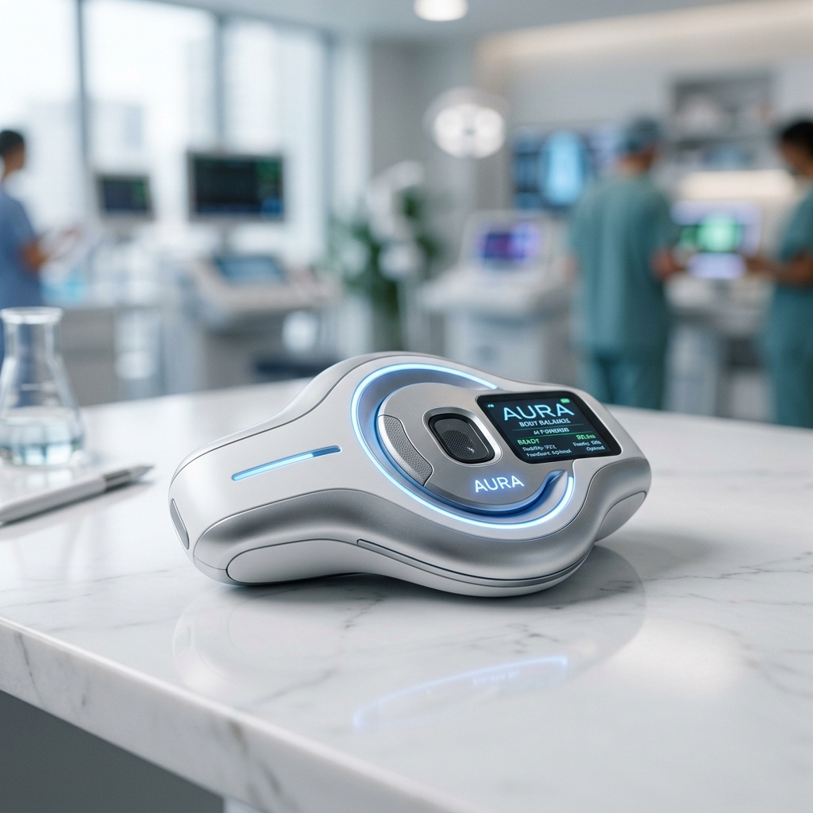

最新のAIボディバランスセンサーと、確かな理論に基づく手技で、
あなたの「本当の身体の繋がり」を取り戻します。
キネティックフォーラム代表・矢田修先生が提唱する「BCトータルバランスシステム」を導入しています。
このシステムは、MLBドジャースの山本由伸投手など、世界のトップアスリートのパフォーマンス向上と怪我予防を支える、確かな実績と理論に基づく画期的なメソッドです。

菅原接骨院の院長は、矢田修先生の直弟子として直接指導を受けてきました。
遠方まで足を運ばずとも、この高度で専門的なトップレベルの施術を、埼玉県新座市で受けることが可能です。地域の皆様の健康とスポーツライフを最大限にサポートします。

当院では、AI搭載の最新ボディバランスセンサー「KINETIC LAB-Link」を活用しています。 勘や経験だけでなく、客観的な動作データと生体情報を組み合わせることで、一人ひとりに最適なアプローチ法を導き出します。
菅原接骨院は「KINETIC LAB-Link」の正規代理店です。当院での施術体験だけでなく、ご自宅での日々のケア用や、他施設様向けのデバイス導入・購入相談も随時受け付けております。
私と「BCトータルバランスシステム」の出会いは、自身の治療家としての壁を感じていた時でした。矢田修先生の理論に触れ、身体の連動性の奥深さに感銘を受け、直弟子として長年学ばせていただきました。
アスリートからご高齢の方まで、身体の痛みや不調の原因は「バランスの崩れ」にあります。トップアスリートが実践する最先端のコンディショニング理論を、地域の皆様にも提供したいという想いで日々施術にあたっています。
「KINETIC LAB-Link」という最新AI技術と、受け継がれた手技の融合によって、皆様の健やかな毎日を全力でサポートいたします。
施術に関するご予約・ご相談、および「KINETIC LAB-Link」の導入・購入に関するお問い合わせは、下記のフォームよりお気軽にご連絡ください。
※ご予約の場合は可能であればEPARKをご利用ください。